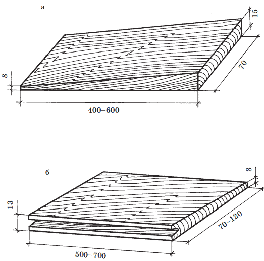

Кровля из дерева.

Дерево – самый непрактичный кровельный материал. Древесную кровлю делают в двух случаях: когда других кровельных материалов нет или в декоративных целях, например, если весь дом выдержан в скандинавском бревенчатом стиле. Деревянная кровля ненадежна и недолговечна т. к. горит и склонна к гниению и поражению паразитами. Чтобы увеличить долговечность деревянной кровли, ее обрабатывают специальными противогнилостными и огнестойкими составами и антисептиками.
Внимание!
Достоинствами деревянных кровель являются дешевизна и простота в устройстве. Чаще всего деревянная кровля встречается в северных лесных районах как наиболее органично вписывающаяся в местный ландшафт. Для устройства деревянной кровли применяются гонт, деревянные плитки, щепа, кровельная дрань и стружки, доски (тесовая кровля) и т. п., выполненные главным образом из хвойных пород дерева.
Гонт, применяемый для кровли, это клинообразная дощечка с пазом (шпунтом), расположенным вдоль завышенной кромки ( рис. 13).

Рис. 13. Материалы для деревянной кровли: а – деревянные плитки; б – гонт
Дощечка выпиливается вдоль волокон древесины и скос гонта в таком случае проходит поперек волокон. Дощечку выпиливают размером 500, 600, 700 мм по длине и 70, 80, 90, 100, 110 и 120 мм по ширине. Высота широкого ребра 15 мм, низкого – 3 мм. В высоком ребре устраивается трапециевидный паз глубиной 12 мм, шириной по кромке 5 мм, а на дне 3,5 мм.
Для изготовления гонта применяют древесину ели, сосны, пихты, кедра, осины. Древесина хвойных пород обладает меньшей плотностью по сравнению с плотностью лиственных и легко обрабатывается. По величине показателя объемного веса (410–500 кг/м ) древесина хвойных пород относится к древесине легкой. Перечисленные выше породы обычно имеют правильную форму ствола, что позволяет с меньшими отходами использовать их при изготовлении гонта. Смолистость этих пород повышает стойкость древесины против загнивания. Древесина осины отличается стойкостью во влажной среде. Древесина ели мягче и легче древесины сосны, быстрее загнивает и менее прочная.
Требование
Перед укладкой качество гонта проверяется. На продольных кромках гонта пороки древесины (отщепы, отколы, обзол) не допускаются.
Гонт перед укладкой обрабатывается антисептирующими и огнезащитными составами.
Кровельные деревянные плитки представляют собой дощечки клинообразной формы длиной 400, 450, 500, 550, 600 мм и шириной до 70 мм. Скос клина устраивается вдоль волокон, высота толстого конца 13 мм, узкого – 3 мм. По качеству древесины кровельные плитки делятся на три сорта и могут быть изготовлены так же, как и гонт, из древесины ели, сосны, пихты, кедра, осины. В плитках не допускаются отщепы, отколы, трещины, обзолы, сучки. Их влажность не может быть выше 25 %. Перед укладкой они также, как гонт, обрабатываются антисептиками, антипиренами.
Щепную кровлю выполняют из кровельной стружки, которая получается в результате строгания коротких отрезков древесины хвойных и мягких лиственных пород, о которых говорилось выше. Стружку получают на специальном строгальном станке. Длина ее 400–500 мм, ширина 70-120 мм, толщина 3 мм. Древесина для изготовления стружки не должна иметь сучков и гнили. Влажность древесины стружки может достигать 40 %.
Кровельная дрань изготавливается на драночном станке, где однослойные полосы древесины срезаются с заготовки вдоль волокон (т. е. дранцы отщепляют от четверти чурки по сердцевидным лучам). Срезанные полосы затем разрезаются на драни длиной 400-1000 мм, шириной 90-130 мм, толщиной 3–5 мм. Дрань кровельная также изготавливается из древесины хвойных пород и мягких лиственных пород, где исключаются такие пороки, как выпадающие и гнилые сучки, гниль, сквозные трещины.
Тесовая кровля или кровля из досок выполняется из досок толщиной 19–25 мм и шириной 160–220 мм, изготовленных из древесины хвойных пород. Для облегчения стока воды вдоль кромок в досках устраивают желобки-дорожки. Доски должны быть остроганы со всех сторон. Влажность древесины должна быть в пределах 15–18 %, а древесина не должна иметь трещин и сучков.
Внимание!
Антисептические составы должны обладать высокой токсичностью по отношению к низшим микроорганизмам, но быть безвредными для людей и животных; сохранять высокую токсичность в течение заданного срока; легко проникать в древесину на требуемую глубину; не ухудшать физико-механические свойства древесины, в частности, не повышать ее гигроскопичность и электропроводимость; не вызывать коррозии металлических частей, применяемых для соединения и крепления деревянных элементов.
Различают антисептики, применяемые в водных растворах; антисептические пасты на основе водорастворимых антисептиков; масляные антисептики, применяемые в органических растворителях.
Антисептики, применяемые в водных растворах: фтористый натрий NaF, кремнефтористый натрий Na SiF , кремнефтористый аммоний NH SiF , хлористый цинк ZnCl , пентахлорфенолят натрия, оксидефенолят натрия, уралит и препарат ГР-48.
Антисептические пасты на основе водорастворимых антисептиков по виду связующего подразделяют на битумные, кузбасслаки, экстрактовые и глиняные. Для антисептирования элементов кровли применяются битумные и кузбасслаки.
Для антисептирования деревянных элементов зданий и сооружений, работающих на открытом воздухе (к ним относятся и деревянные кровли), применяют маслянистые антисептики: каменно-угольные, полукоксовые и сланцевое масло.